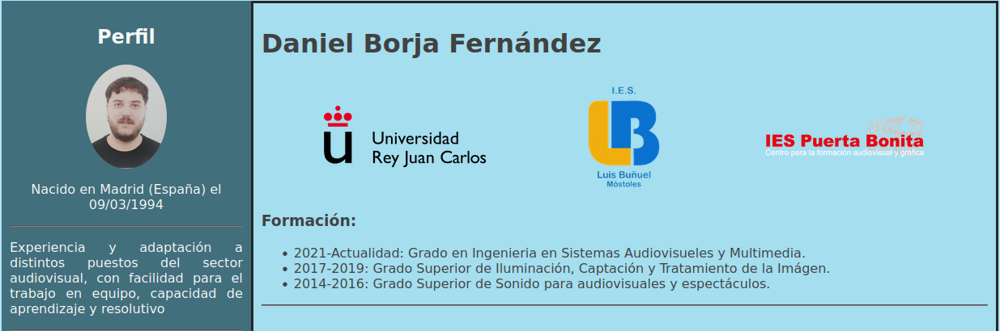

Índice de prácticas
Repositorio de prácticas CSAAI 2023-2024.
Práctica 1: CV Web
Para esta primer práctica vamos a desarrollar un CV utilizando HTML y CSS.
Ver la prácticaPráctica 2: ¡BOOM!

Para esta segunda práctica vamos a utilizar lo que sabemos sobre javascript para programar un juego sencillo. Consiste en adivinar la clave secreta de cuatro números lo más rápido posible.
Ver la prácticaPráctica 3
Senserit mediocrem vis ex, et dicunt deleniti gubergren mei. Mel id clita mollis repudiare. Sed ad nostro delicatissimi, postea pertinax est an. Adhuc sensibus percipitur sed te, eirmod tritani debitis nec ea. Cu vis quis gubergren.
Ver la prácticaPráctica 4
Senserit mediocrem vis ex, et dicunt deleniti gubergren mei. Mel id clita mollis repudiare. Sed ad nostro delicatissimi, postea pertinax est an. Adhuc sensibus percipitur sed te, eirmod tritani debitis nec ea. Cu vis quis gubergren.
Ver la prácticaPráctica 5
Senserit mediocrem vis ex, et dicunt deleniti gubergren mei. Mel id clita mollis repudiare. Sed ad nostro delicatissimi, postea pertinax est an. Adhuc sensibus percipitur sed te, eirmod tritani debitis nec ea. Cu vis quis gubergren.
Ver la práctica